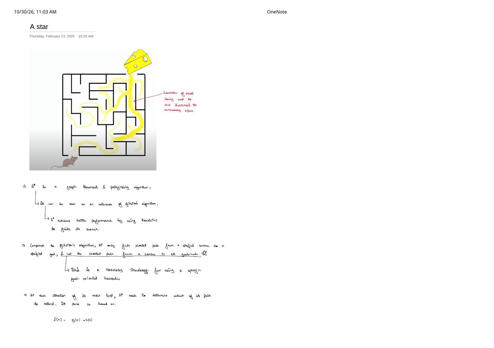
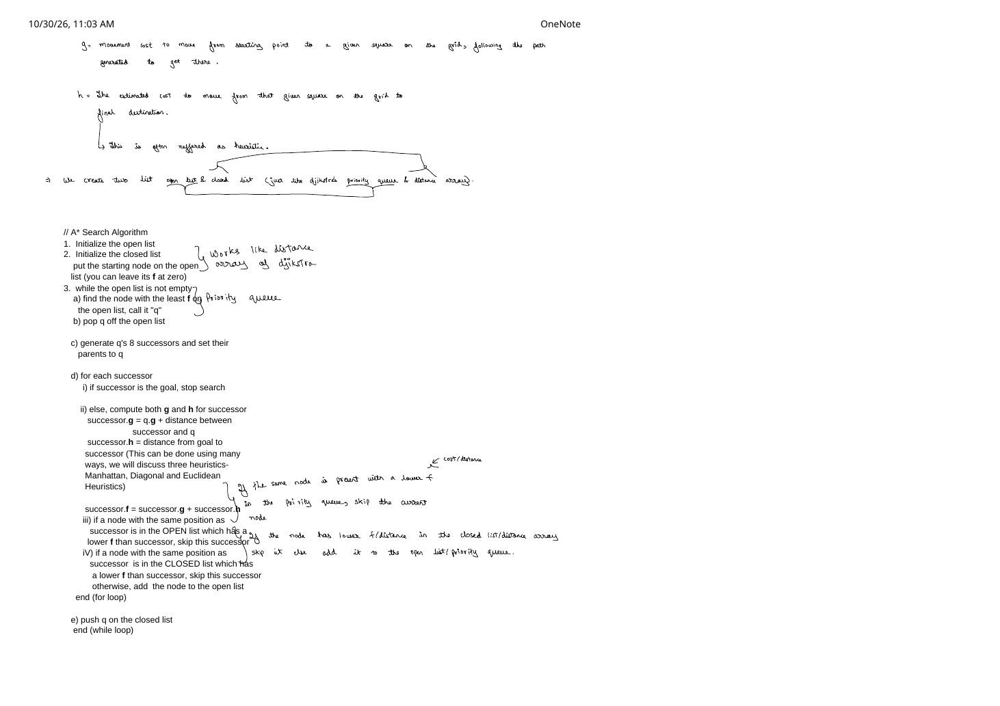

A* Heuristic Search: Guiding Dijkstra with $f(n) = g(n) + h(n)$
Expanded from handwritten competitive coding study note: 03_A_star.pdf
Dijkstra's algorithm is optimal and general, yet completely goal-blind: if you search for a route from Mumbai to Delhi, Dijkstra expands circular distance rings southward and westward just as eagerly as northward until a ring finally touches Delhi. A* (A-star) search extends Dijkstra by adding a goal-directed heuristic — illustrated on page 1 of the handwritten notes as a mouse following the scent of cheese in a maze to skip dead-end corridors in the wrong direction.
source to a single specified goal. Because its priority score embeds an estimate of remaining distance to that particular goal, vertices outside the corridor toward goal are purposefully left unexplored.
1. The Evaluation Function $f(n) = g(n) + h(n)$ & Progression
At each iteration of its main loop, A* chooses which frontier node $n$ to extend next by minimizing:
A* Priority Score
$$f(n) = g(n) + h(n)$$- $g(n)$ — Exact movement cost so far: Movement cost incurred moving from the starting square to $n$ along the best path generated to get there (identical to Dijkstra's
dist[n]). - $h(n)$ — Heuristic cost-to-go: Estimated cost to move from square $n$ on the grid to the final destination
goal. - $f(n)$ — Estimated total path cost: Estimated total cost of the cheapest path from
starttogoalconstrained to pass through $n$.
| Algorithm | Priority Key $f(n)$ | Shortest-Path Optimal? | Search Behavior |
|---|---|---|---|
| Dijkstra | $f(n) = g(n)$ ($h = 0$) | Yes (all targets) | Expands uniform concentric cost balls in every direction; wastes work opposite to goal. |
| Greedy Best-First | $f(n) = h(n)$ ($g$ ignored) | No | Rushes straight toward goal, easily trapped into expensive detours around walls. |
| A* Search | $f(n) = g(n) + h(n)$ | Yes (for admissible $h$) | Balances exact past cost $g$ with optimistic remaining estimate $h$, focusing expansion into an ellipse toward goal. |
Open List & Closed List = Dijkstra's Priority Queue & Distance Array
Classical AI textbooks describe A* in terms of an Open List and a Closed List. As annotated directly in the margins of page 2 of the handwritten notes, these map 1-to-1 onto familiar competitive-programming structures:
- Open List $\leftrightarrow$ Min-Heap Priority Queue: Holds discovered frontier candidates ordered by least $f(n) = g(n) + h(n)$. If the same square already sits in the Open List with a lower $f$ (equivalently lower $g$, since $h(n)$ depends only on $n$), the worse duplicate is skipped.
- Closed List +
gScore[][]$\leftrightarrow$ Visited Set +dist[]Array: Records already-expanded states and best-known distances so inferior arrivals are skipped immediately.
2. Admissibility & Consistency: When Is A* Guaranteed Exact?
Let $h^*(n)$ denote the true unknown shortest-path distance from $n$ to goal. Whether A* returns a provably optimal shortest path depends on two mathematical properties of $h(n)$:
1. Admissibility ($0 \le h(n) \le h^*(n)$) — Guarantees Optimal Cost
A heuristic $h$ is admissible if it never overestimates the true remaining cost to reach the goal. Intuitively, an admissible heuristic is optimistic (e.g., straight-line distance ignoring walls).
Proof sketch: Suppose A* pops goal from the Open List with cost $g(\text{goal})$ while a strictly shorter path of true total cost $C^* \lt g(\text{goal})$ exists. Some unexpanded vertex $u$ along that optimal path must currently sit in the Open List with exact $g(u)$. Because $h$ is admissible and $h(\text{goal}) = 0$:
Hence $u$ has strictly smaller $f$ than goal and would have been popped before goal — contradiction! Thus the moment goal is popped from the Open List, $g(\text{goal}) = C^*$.
2. Consistency / Monotonicity ($h(u) \le w(u, v) + h(v)$) — Guarantees Single Settlement
A heuristic $h$ is consistent if $h(\text{goal}) = 0$ and for every edge $(u, v)$ of non-negative weight $w(u, v)$, the triangle inequality holds: $h(u) \le w(u, v) + h(v)$.
Adding $g(u)$ to both sides gives $g(u) + h(u) \le (g(u) + w(u, v)) + h(v) \implies f(u) \le f(v)$. Therefore, $f$-values popped from the heap are monotonically non-decreasing, every consistent heuristic is automatically admissible, and once a node enters the Closed List its $g(u)$ is permanently optimal (it never needs to be re-opened!). That preserves Dijkstra's clean $\mathcal{O}(E \log V)$ worst-case bound.
3. Grid Heuristics: Manhattan vs. Diagonal vs. Euclidean
Page 2 highlights the three standard geometric heuristics on a 2D grid between square $(x_1, y_1)$ and goal $(x_2, y_2)$. Let $\Delta x = |x_1 - x_2|$ and $\Delta y = |y_1 - y_2|$. Your allowed move set dictates which heuristic is both admissible (never overestimates) and tightest (prunes the most states):
| Allowed Movement | Step Costs | Exact Free-Space Heuristic $h(\Delta x, \Delta y)$ | Consistent? |
|---|---|---|---|
| 4-Directional (N, S, E, W) | Cardinal $= D$ | Manhattan: $D \cdot (\Delta x + \Delta y)$ | Yes |
| 8-Directional (King moves) | Cardinal $= 1$, Diagonal $= 1$ | Chebyshev: $\max(\Delta x, \Delta y)$ | Yes |
| 8-Directional (Geometric) | Cardinal $= D$, Diagonal $= D_2 = \sqrt{2}D$ | Octile: $D(\Delta x + \Delta y) + (D_2 - 2D)\min(\Delta x, \Delta y)$ | Yes |
| Arbitrary 2D Graph / Any-Angle | Edge cost $\ge$ straight-line distance | Euclidean: $\sqrt{\Delta x^2 + \Delta y^2}$ | Yes |
4. Step-by-Step Dry Run on a 4-Directional Grid
Consider a $3 \times 4$ unit-cost 4-directional grid from S = (1, 0) to G = (1, 3) with a blocked cell # at (1, 2), using Manhattan heuristic $h(r, c) = |r - 1| + |c - 3|$:
| Pop # | Popped Cell q |
Scores $(g, h \Rightarrow f)$ | Why Chosen / Effect on Open List |
|---|---|---|---|
| 1 | (1, 0) [Start] |
$g=0, h=3 \Rightarrow \mathbf{f=3}$ | Generates (1, 1) with $(g=1, h=2 \Rightarrow f=3)$, plus (0, 0) and (2, 0) with $(g=1, h=4 \Rightarrow f=5)$. |
| 2 | (1, 1) |
$g=1, h=2 \Rightarrow \mathbf{f=3}$ | East (1, 2) is blocked #! Pushes (0, 1) and (2, 1) with $(g=2, h=3 \Rightarrow f=5)$. Notice backward cells (0, 0), (2, 0) also sit at $f=5$. |
| 3 | (0, 1) |
$g=2, h=3 \Rightarrow \mathbf{f=5}$ | Tie-breaking on larger $g$ (closer to goal) pops (0, 1) before (0, 0), generating (0, 2) with $(g=3, h=2 \Rightarrow f=5)$. |
| 4 | (0, 2) |
$g=3, h=2 \Rightarrow \mathbf{f=5}$ | Steps around the obstacle, generating (0, 3) with $(g=4, h=1 \Rightarrow f=5)$. |
| 5 | (0, 3) |
$g=4, h=1 \Rightarrow \mathbf{f=5}$ | Generates (1, 3) [Goal] with $(g=5, h=0 \Rightarrow f=5)$. |
| 6 | (1, 3) [Goal] |
$g=5, h=0 \Rightarrow \mathbf{f=5}$ | Goal popped! Optimal path (1,0)→(1,1)→(0,1)→(0,2)→(0,3)→(1,3) of length $5$ found without ever expanding (0,0) or (2,0)! |
5. Clean C++ Implementation (8-Directional Grid A* Search)
Below is a contest-ready C++ implementation of the 8-successor grid A* algorithm from page 2 of the notes, using the exact Octile heuristic ($D = 1.0$, $D_2 = \sqrt{2}$), Open List min-heap, Closed List boolean matrix, and parent pointers:
#include <bits/stdc++.h>
using namespace std;
struct AStarResult {
double cost;
vector<pair<int, int>> path; // empty if unreachable
};
// Octile heuristic for 8-directional grid (cardinal = 1.0, diagonal = sqrt(2))
double octileHeuristic(int r, int c, int gr, int gc) {
double dx = abs(r - gr);
double dy = abs(c - gc);
const double D = 1.0, D2 = sqrt(2.0);
return D * (dx + dy) + (D2 - 2.0 * D) * min(dx, dy);
}
// grid[r][c] == 0 means walkable, 1 means blocked obstacle
AStarResult aStarGrid8(const vector<vector<int>>& grid,
pair<int, int> start,
pair<int, int> goal) {
int R = static_cast<int>(grid.size());
int C = static_cast<int>(grid[0].size());
auto [sr, sc] = start;
auto [gr, gc] = goal;
if (grid[sr][sc] == 1 || grid[gr][gc] == 1) return {-1.0, {}};
const double INF = 1e18;
// gScore acts as Dijkstra's dist[] array; closed[][] marks settled cells
vector<vector<double>> gScore(R, vector<double>(C, INF));
vector<vector<bool>> closed(R, vector<bool>(C, false));
vector<vector<pair<int, int>>> parent(R, vector<pair<int, int>>(C, {-1, -1}));
// Open list min-heap ordered by f = g + h: {f, r, c}
using Node = tuple<double, int, int>;
priority_queue<Node, vector<Node>, greater<Node>> openList;
gScore[sr][sc] = 0.0;
openList.push({octileHeuristic(sr, sc, gr, gc), sr, sc});
const int dr[8] = {-1, -1, -1, 0, 0, 1, 1, 1};
const int dc[8] = {-1, 0, 1, -1, 1, -1, 0, 1};
while (!openList.empty()) {
auto [f, r, c] = openList.top();
openList.pop();
// Skip if already settled in Closed List
if (closed[r][c]) continue;
closed[r][c] = true;
// Goal popped from Open List => guaranteed optimal with admissible/consistent h!
if (r == gr && c == gc) {
vector<pair<int, int>> path;
for (pair<int, int> cur = goal; cur.first != -1; cur = parent[cur.first][cur.second]) {
path.push_back(cur);
}
reverse(path.begin(), path.end());
return {gScore[gr][gc], path};
}
// Generate 8 successors around q = (r, c)
for (int dir = 0; dir < 8; dir++) {
int nr = r + dr[dir];
int nc = c + dc[dir];
if (nr < 0 || nr >= R || nc < 0 || nc >= C || grid[nr][nc] == 1 || closed[nr][nc]) {
continue;
}
double stepCost = (dr[dir] != 0 && dc[dir] != 0) ? sqrt(2.0) : 1.0;
double tentativeG = gScore[r][c] + stepCost;
// Only push if strictly better than any previous path to (nr, nc)
if (tentativeG < gScore[nr][nc]) {
gScore[nr][nc] = tentativeG;
parent[nr][nc] = {r, c};
double fNext = tentativeG + octileHeuristic(nr, nc, gr, gc);
openList.push({fNext, nr, nc});
}
}
}
return {-1.0, {}};
}6. Complexity Proof & Subtle Edge Cases
Time & Space Complexity
- Worst-Case Time — $\mathcal{O}(E \log V)$: With a consistent heuristic ($h(u) \le w(u, v) + h(v)$), every cell enters
closed[][]at most once and scans at most $8$ neighbors, matching Dijkstra's $\mathcal{O}(E \log V)$ worst-case upper bound (e.g., whengoalis unreachable behind a closed wall so every reachable cell must be explored). In open or lightly obstructed maps, A* expands only $\mathcal{O}(d)$ states along the optimal corridor of length $d$ instead of $\mathcal{O}(d^2)$ circular states! - Auxiliary Space — $\mathcal{O}(V)$: Storing
gScore,closed,parent, and the Open List over $V = R \cdot C$ grid cells.
Three Classic A* Bugs
- Stopping When
goalIs Generated Instead of Popped: Notice stepd.iin many introductory pseudocodes ("if successor is the goal, stop search"). That shortcut is ONLY valid on unweighted unit-cost graphs! On weighted graphs (or 8-directional grids with $\sqrt{2}$ diagonals), generatinggoalvia a diagonal of cost $1.414$ before popping a neighbor that reachesgoalat total cost $1.2$ returns a suboptimal path. Always pushgoalto the Open List and terminate whengoalis popped. - Inadmissible Heuristic Mismatch: Using Manhattan distance ($\Delta x + \Delta y = 2$) on an 8-directional grid where a single diagonal move costs $1$ or $\sqrt{2} \approx 1.414$ overestimates true cost ($2 \gt 1.414$), breaking shortest-path optimality!
- Admissible but Inconsistent Heuristic + Closed-List Skipping: If a custom heuristic is admissible ($h \le h^*$) yet violates $h(u) \le w(u, v) + h(v)$, a vertex in
closedmight later receive a smallergScoreand must be re-opened (skippingclosed[nr][nc]unconditionally would miss the better path). Standard geometric metrics (Manhattan, Chebyshev, Octile, Euclidean) satisfy the triangle inequality, so they are always consistent.
From the Handwritten Notes
View original handwritten page — A* Page 1: Maze heuristic intuition, single-goal tradeoff & $f(n) = g(n) + h(n)$


03_A_star.pdf: Visual maze intuition ("heuristic of smell"), single-goal vs all-nodes tradeoff, and $f(n) = g(n) + h(n)$.View original handwritten page — A* Page 2: $g$ vs $h$ definitions, Open/Closed lists & annotated pseudocode


03_A_star.pdf: Mapping Open List to Dijkstra's priority queue and Closed List to the distance array, plus Manhattan, Diagonal, and Euclidean heuristics.